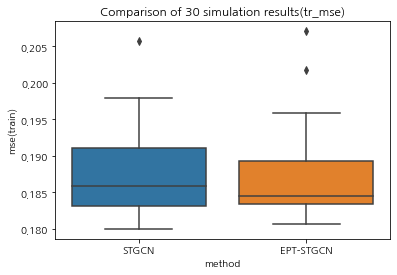
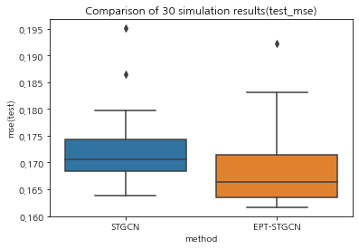

30회 시뮬레이션 결과비교
train: 2022-06-01 00:00:00 ~ 2022-08-14 17:00:00test: 2022-08-14 18:00:00 ~ 2022-09-15 23:00:00- 힌남노 활동기간: 2022년 8월 28일 15시 ~ 2022년 9월 6일 21시
IMPORT
SIMUL STGCN RSLT
| dataset | method | lags | nof_filters | epoch | mse(train) | mse(test) | calculation_time | |
|---|---|---|---|---|---|---|---|---|
| 0 | data2 | STGCN | 4 | 32 | 50 | 0.184729 | 0.16915 | 377.234105 |
| 1 | data2 | STGCN | 4 | 32 | 50 | 0.194348 | 0.179128 | 404.002319 |
| 2 | data2 | STGCN | 4 | 32 | 50 | 0.186852 | 0.171011 | 404.872347 |
| 3 | data2 | STGCN | 4 | 32 | 50 | 0.192293 | 0.177862 | 404.354106 |
| 4 | data2 | STGCN | 4 | 32 | 50 | 0.184383 | 0.165967 | 404.739908 |
| 5 | data2 | STGCN | 4 | 32 | 50 | 0.187998 | 0.171345 | 403.504373 |
| 6 | data2 | STGCN | 4 | 32 | 50 | 0.20575 | 0.195115 | 404.138369 |
| 7 | data2 | STGCN | 4 | 32 | 50 | 0.185384 | 0.172689 | 403.663877 |
| 8 | data2 | STGCN | 4 | 32 | 50 | 0.194767 | 0.179806 | 403.539248 |
| 9 | data2 | STGCN | 4 | 32 | 50 | 0.180619 | 0.16791 | 403.825341 |
| 10 | data2 | STGCN | 4 | 32 | 50 | 0.185755 | 0.168067 | 403.919527 |
| 11 | data2 | STGCN | 4 | 32 | 50 | 0.182045 | 0.165334 | 403.761422 |
| 12 | data2 | STGCN | 4 | 32 | 50 | 0.179984 | 0.163826 | 416.916373 |
| 13 | data2 | STGCN | 4 | 32 | 50 | 0.182908 | 0.168465 | 418.946952 |
| 14 | data2 | STGCN | 4 | 32 | 50 | 0.180602 | 0.168306 | 420.972627 |
| 15 | data2 | STGCN | 4 | 32 | 50 | 0.188245 | 0.173417 | 407.305866 |
| 16 | data2 | STGCN | 4 | 32 | 50 | 0.191077 | 0.174629 | 406.501366 |
| 17 | data2 | STGCN | 4 | 32 | 50 | 0.182869 | 0.166464 | 408.495907 |
| 18 | data2 | STGCN | 4 | 32 | 50 | 0.19079 | 0.173249 | 408.574794 |
| 19 | data2 | STGCN | 4 | 32 | 50 | 0.180641 | 0.169462 | 407.30098 |
| 20 | data2 | STGCN | 4 | 32 | 50 | 0.183225 | 0.16961 | 408.664111 |
| 21 | data2 | STGCN | 4 | 32 | 50 | 0.18652 | 0.170032 | 408.306077 |
| 22 | data2 | STGCN | 4 | 32 | 50 | 0.185923 | 0.171719 | 408.045289 |
| 23 | data2 | STGCN | 4 | 32 | 50 | 0.19706 | 0.176483 | 407.953204 |
| 24 | data2 | STGCN | 4 | 32 | 50 | 0.184862 | 0.168875 | 407.763272 |
| 25 | data2 | STGCN | 4 | 32 | 50 | 0.197922 | 0.186466 | 404.780481 |
| 26 | data2 | STGCN | 4 | 32 | 50 | 0.192646 | 0.179262 | 402.828646 |
| 27 | data2 | STGCN | 4 | 32 | 50 | 0.183524 | 0.166634 | 401.142154 |
| 28 | data2 | STGCN | 4 | 32 | 50 | 0.18306 | 0.16839 | 400.589833 |
| 29 | data2 | STGCN | 4 | 32 | 50 | 0.188916 | 0.173284 | 402.841741 |
SIMUL EPT-STGCN RSLT
| dataset | method | lags | nof_filters | epoch | mse(train) | mse(test) | calculation_time | |
|---|---|---|---|---|---|---|---|---|
| 0 | data2 | EPT-STGCN | 4 | 32 | 50 | 0.207058 | 0.192318 | 405.406879 |
| 1 | data2 | EPT-STGCN | 4 | 32 | 50 | 0.183151 | 0.166525 | 406.358098 |
| 2 | data2 | EPT-STGCN | 4 | 32 | 50 | 0.187727 | 0.170964 | 405.92099 |
| 3 | data2 | EPT-STGCN | 4 | 32 | 50 | 0.183493 | 0.165333 | 405.771331 |
| 4 | data2 | EPT-STGCN | 4 | 32 | 50 | 0.183788 | 0.163304 | 406.80101 |
| 5 | data2 | EPT-STGCN | 4 | 32 | 50 | 0.184463 | 0.166215 | 404.526357 |
| 6 | data2 | EPT-STGCN | 4 | 32 | 50 | 0.184557 | 0.168805 | 404.531185 |
| 7 | data2 | EPT-STGCN | 4 | 32 | 50 | 0.182589 | 0.16412 | 403.679201 |
| 8 | data2 | EPT-STGCN | 4 | 32 | 50 | 0.18965 | 0.168722 | 404.699471 |
| 9 | data2 | EPT-STGCN | 4 | 32 | 50 | 0.181751 | 0.161628 | 404.820747 |
| 10 | data2 | EPT-STGCN | 4 | 32 | 50 | 0.193702 | 0.174698 | 404.747668 |
| 11 | data2 | EPT-STGCN | 4 | 32 | 50 | 0.186056 | 0.169208 | 405.390504 |
| 12 | data2 | EPT-STGCN | 4 | 32 | 50 | 0.183449 | 0.164652 | 418.454221 |
| 13 | data2 | EPT-STGCN | 4 | 32 | 50 | 0.181829 | 0.164456 | 431.528654 |
| 14 | data2 | EPT-STGCN | 4 | 32 | 50 | 0.181213 | 0.162173 | 407.844052 |
| 15 | data2 | EPT-STGCN | 4 | 32 | 50 | 0.185801 | 0.163754 | 411.968251 |
| 16 | data2 | EPT-STGCN | 4 | 32 | 50 | 0.180674 | 0.162226 | 409.180396 |
| 17 | data2 | EPT-STGCN | 4 | 32 | 50 | 0.183327 | 0.165314 | 410.445006 |
| 18 | data2 | EPT-STGCN | 4 | 32 | 50 | 0.188633 | 0.171534 | 410.336946 |
| 19 | data2 | EPT-STGCN | 4 | 32 | 50 | 0.183651 | 0.162947 | 407.536792 |
| 20 | data2 | EPT-STGCN | 4 | 32 | 50 | 0.181314 | 0.16315 | 407.53003 |
| 21 | data2 | EPT-STGCN | 4 | 32 | 50 | 0.189536 | 0.173027 | 407.360921 |
| 22 | data2 | EPT-STGCN | 4 | 32 | 50 | 0.194188 | 0.180879 | 407.03145 |
| 23 | data2 | EPT-STGCN | 4 | 32 | 50 | 0.19195 | 0.173795 | 406.137764 |
| 24 | data2 | EPT-STGCN | 4 | 32 | 50 | 0.201777 | 0.183143 | 409.344015 |
| 25 | data2 | EPT-STGCN | 4 | 32 | 50 | 0.188091 | 0.170836 | 408.617722 |
| 26 | data2 | EPT-STGCN | 4 | 32 | 50 | 0.184508 | 0.163219 | 407.710896 |
| 27 | data2 | EPT-STGCN | 4 | 32 | 50 | 0.187269 | 0.170395 | 408.118827 |
| 28 | data2 | EPT-STGCN | 4 | 32 | 50 | 0.184121 | 0.163209 | 407.103555 |
| 29 | data2 | EPT-STGCN | 4 | 32 | 50 | 0.195845 | 0.175516 | 373.846944 |
SIMUL VISUALIZATION
| method | mse(train) | mse(test) | |||||
|---|---|---|---|---|---|---|---|
| mean | median | var | mean | median | var | ||
| 0 | EPT-STGCN | 0.187172 | 0.184532 | 0.000039 | 0.168869 | 0.166370 | 0.000050 |
| 1 | STGCN | 0.187523 | 0.185839 | 0.000037 | 0.172399 | 0.170521 | 0.000044 |
- train
sns.boxplot(x = rslt['method'],
y = rslt['mse(train)'])
plt.title('Comparison of 30 simulation results(tr_mse)')
plt.show()
- test
sns.boxplot(x = rslt['method'],
y = rslt['mse(test)'])
plt.title('Comparison of 30 simulation results(test_mse)')
plt.show()
- histogram (test)
LRNR (STGCN)
/home/jy/Dropbox/noteda/posts/SOLAR/eptstgcn/learners.py:70: UserWarning: Creating a tensor from a list of numpy.ndarrays is extremely slow. Please consider converting the list to a single numpy.ndarray with numpy.array() before converting to a tensor. (Triggered internally at /opt/conda/conda-bld/pytorch_1678402421473/work/torch/csrc/utils/tensor_new.cpp:245.)
X = torch.tensor(dataset.features).float()